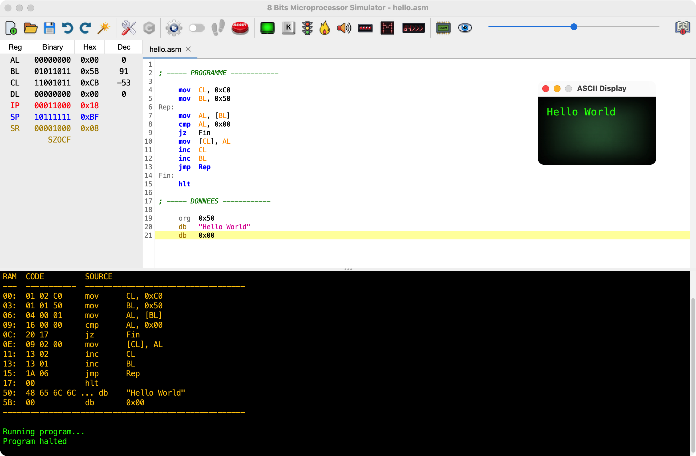
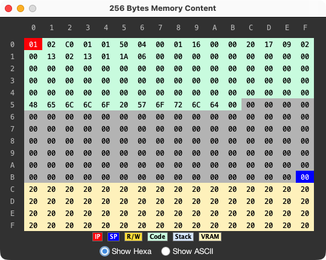
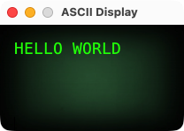
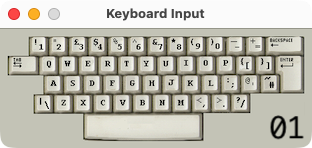
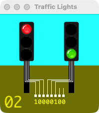
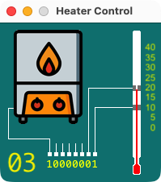
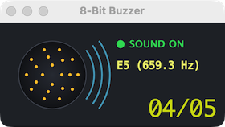
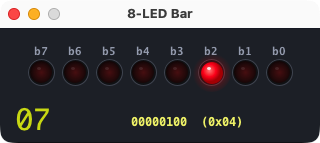
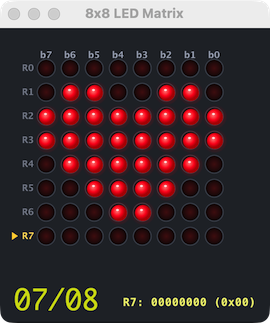
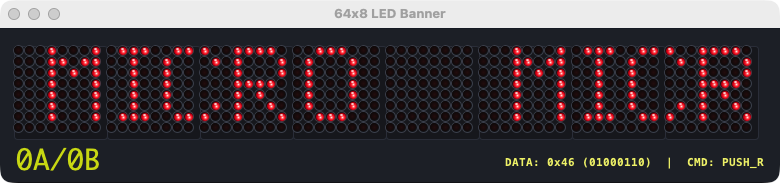

MicroSim x86 est un simulateur de microprocesseur 8 bits conçu comme un outil pédagogique pour l'apprentissage de la programmation en langage machine x86 de type MASM. Il fournit un environnement complet : un éditeur de code avec coloration syntaxique, une visualisation des registres et de la mémoire RAM 256 octets (données et adresses sur 8 bits) ainsi que plusieurs périphériques virtuels. Il fournit également un mini-compilateur C qui compile un sous-ensemble du C qui inclut notamment les opérations de pointeur &var (adresse) et *var (déréférencement) permettant de faire le lien avec la mémoire adressable.
L'objectif est d'illustrer les concepts fondamentaux de l'architecture des ordinateurs, tels que les registres, la mémoire, la pile, et le fonctionnement interne d'un CPU à travers un jeu d'instructions simple, mais complet et réaliste.
MicroSim est multiplateforme (car développé en Java) et comme il embarque sa propre machine virtuelle, il est autonome : pas besoin d'installer Java sur la machine hôte. Des scripts bash de packaging sont proposés pour chaque plateforme.
Ce projet s'inspire de deux autres projets open-source similaires :
L'interface du simulateur comprend plusieurs zones qui vous permettent d'écrire, d'exécuter et de déboguer du code x86. Le contenu de la mémoire et des registres est actualisé en continu pendant l'exécution, à vitesse ajustable ou en mode pas-à-pas :

C'est la zone où vous écrivez vos programmes en assembleur ou en C. L'éditeur fonctionne désormais avec des onglets, permettant d'éditer simultanément plusieurs fichiers sources. Chaque onglet dispose de son propre historique d'annulation/rétablissement (undo/redo), de son indicateur de modification *, et d'un bouton de fermeture [x] avec confirmation de sauvegarde. Vous pouvez ouvrir des fichiers via le bouton Open, par glisser-déposer (drag & drop), ou en créant de nouveaux onglets avec le bouton New. L'éditeur offre une coloration syntaxique adaptée (.asm et .c), la numérotation des lignes, ainsi qu'une fonction de reformatage / beautifier afin de normaliser la mise en forme du code.
Situé à gauche de l'éditeur, ce panneau affiche en temps réel l'état de tous les registres du CPU :
AL, BL, CL, DLIP (Instruction Pointer) et SP (Stack Pointer)SR affiche les drapeaux ...SZOCF qui caractérisent la dernière opération.Située au-dessus de l'éditeur, elle donne accès aux fonctionnalités principales réparties en sections logiques :
Section Éditeur :
Section Assemblage & Compilation :
Section Contrôle d'exécution :
Section Périphériques (Devices) :
Section Vues Système (Mémoire & Architecture) :
Contrôle de vitesse & Aide :
Il est possible de visualiser le contenu de la mémoire vive (RAM) sous la forme d'une table de 16x16 octets notés sous forme hexadécimale ou ASCII. C'est un outil essentiel pour déboguer et comprendre comment vos données et votre code sont stockés. La visualisation indique également les emplacements pointés par les registres IP (en rouge) et SP (en bleu) :

MicroSim x86 inclus plusieurs périphériques d'entrée/sortie qui peuvent être contrôlés par programme via des adresses mémoire ou des ports d'E/S.
| Périphérique | Type | Adresse / Port | Opération |
|---|---|---|---|
| Terminal ASCII | Mémoire | 0xC0 à 0xFF |
MOV [addr], AL |
| Clavier | Port | 0x01 |
IN reg, 0x01 |
| Feux tricolores | Port | 0x02 |
OUT reg, 0x02 |
| Chauffage | Port | 0x03 |
IN reg, 0x03 / OUT reg, 0x03 |
| Buzzer 8-bit | Ports | 0x04 (Note), 0x05 (Durée) |
OUT reg, 0x04 / OUT reg, 0x05 |
| Barre de 8 LED | Port | 0x06 |
OUT reg, 0x06 / IN reg, 0x06 |
| Matrice 8x8 LED | Ports | 0x07 (Ligne), 0x08 (Données) |
OUT reg, 0x07 / OUT reg, 0x08 |
| Bandeau 64x8 LED | Ports | 0x09 (Donnée), 0x0A (Commande) |
OUT reg, 0x09 / OUT reg, 0x0A |
C'est un petit écran texte de 4 lignes de 16 colonnes. Pour afficher un caractère, il suffit d'écrire son code ASCII en RAM dans la zone-mémoire située entre les adresses 0xC0 et 0xFF (soit 64 caractères) :

Le clavier permet d'entrer des caractères via l'instruction IN AL, 0x01 (ou avec tout autre registre BL, CL, DL) qui déclenche une attente d'une action sur le clavier physique de l'ordinateur. Le code ASCII de la touche actionnée sera placé dans le registre cible :

Ce périphérique simule deux feux de circulation. L'instruction OUT AL, 0x02 envoie la valeur du registre au périphérique pour contrôler les lumières. Chaque bit de l'octet dans le registre correspond à une couleur d'un des deux feux :

Ce périphérique représente un système de chauffage simple.
OUT AL, 0x03 contrôle la chaudière selon la valeur du bit 7 (MSB) du registre source.IN AL, 0x03 lit l'état du système (bits 0, 1 et 7) et le place dans le registre destination.
Ce périphérique simule un générateur de son chiptune (onde carrée rétro) pour jouer des notes et des mélodies.
0x04 (Note MIDI / Fréquence) :
OUT AL, 0x04 : déclenche une note MIDI (voir tableau). La valeur 0 coupe le son immédiatement.IN AL, 0x04 : lit le numéro de note en cours de lecture.0x05 (Durée du son) :
OUT AL, 0x05 : programme une durée en dizaines de millisecondes (ex: 20 = 200 ms). À la fin de cette durée, le son s'arrête automatiquement en tâche de fond.IN AL, 0x05 : renvoie 1 si un son est en cours d'émission, 0 sinon.| Note | Do4 | Do#4 | Ré4 | Ré#4 | Mi4 | Fa4 | Fa#4 | Sol4 | Sol#4 | La4 | La#4 | Si4 | Do5 |
|---|---|---|---|---|---|---|---|---|---|---|---|---|---|
| Hexa | 0x3C |
0x3D |
0x3E |
0x3F |
0x40 |
0x41 |
0x42 |
0x43 |
0x44 |
0x45 |
0x46 |
0x47 |
0x48 |

Ce périphérique affiche une rampe horizontale de 8 LED rouges.
OUT AL, 0x06 envoie la valeur du registre à la barre de LED. Chaque bit contrôle une LED (1 = allumée, 0 = éteinte) :
b7).b0).IN AL, 0x06 lit l'état actuel de la barre de LED et le place dans le registre destination.
Ce périphérique affiche une grille de 8 lignes par 8 colonnes de LED rouges, avec une mémoire d'affichage interne (maintien de l'image stable même en mode pas-à-pas ou basse vitesse).
0x07 (Index de ligne) :
OUT AL, 0x07 : sélectionne la ligne active (valeur de 0 à 7).IN AL, 0x07 : renvoie l'index de la ligne active.0x08 (Données de la ligne) :
OUT AL, 0x08 : met à jour les 8 LED de la ligne sélectionnée (bit 7 = gauche b7, bit 0 = droite b0).IN AL, 0x08 : lit l'octet de motif mémorisé pour la ligne sélectionnée.
Ce périphérique simule une matrice de LED horizontale de 64 colonnes par 8 lignes (organisée en 8 modules de 8x8 chaînés), spécialement conçue pour les textes défilants et animations graphiques.
0x09 (Données de colonne) :
OUT AL, 0x09 : charge un motif de colonne de 8 bits dans le registre de données interne (bit 7 = LED du haut, bit 0 = LED du bas).IN AL, 0x09 : relit la dernière donnée écrite.0x0A (Commande) : l'instruction OUT AL, 0x0A exécute la commande définie par la valeur du registre :
0 : Efface l'ensemble de la matrice (CLEAR).1 : Décale la matrice d'une colonne vers la gauche (colonne 63 remise à 0).2 : Décale la matrice d'une colonne vers la droite (colonne 0 remise à 0).3 : Écrit la donnée du port 0x09 dans la colonne 0 (tout à gauche).4 : Écrit la donnée du port 0x09 dans la colonne 63 (tout à droite).5 : Défilement vers la gauche avec injection de la donnée en colonne 63 (PUSH RIGHT).6 : Défilement vers la droite avec injection de la donnée en colonne 0 (PUSH LEFT).IN AL, 0x0A : lit le dernier code de commande exécuté.
AL, BL, CL, DL, SP, IP, SR :Les registres sont des zones de stockage ultra-rapides intégrées au cœur du CPU. Leur taille correspond à la taille des bus internes du microprocesseur (soit 8 bits), Pour manipuler une donnée, le processeur doit d'abord la charger depuis la mémoire dans un de ses registres. On distingue les registres à usage général et les registres spécialisés :
AL, BL, CL, DL : Utilisés pour les calculs (ADD, SUB, etc.), les comparaisons (CMP) et les mouvements de données (MOV).SP : Un registre spécial qui contient l'adresse du sommet de la pile. Il est modifié par les instructions dédiées PUSH et POP.IP : Pointe toujours vers la prochaine instruction à exécuter. Vous ne le modifiez jamais directement, mais via les instructions de saut (JMP, CALL, etc.).SR : Contient des drapeaux (flags) qui donnent des informations sur le résultat de la dernière opération effectuée. C'est un octet de la forme ...SZOCF où chaque lettre correspond à un bit significatif :| Bit | Nom | Description |
|---|---|---|
S |
Sign | Indique un résultat négatif pour les nombres signés en complément à 2 (correspond à la valeur du MSB) |
Z |
Zero | Indique un résultat égal à zéro |
O |
Overflow | Indique un dépassement de capacité pour les nombres signés en complément à 2 lorsque le résultat d'une opération sort de l'intervalle [-128, 127] |
C |
Carry | Indique un dépassement de capacité pour les nombres non signés suite à une addition (retenue) ou d'une soustraction (emprunt) |
F |
Fault | Indique une erreur irrécupérable causée par : - Division par zéro - Débordement de pile (Stack Overflow) lorsque SP < 0x80- Sous-dépassement de pile (Stack Underflow) lorsque SP > 0xBF- Pointeur d'instruction IP hors des limites de la mémoire- Code d'opération (Opcode) invalide ou inconnu |
La mémoire peut être vue comme une grande armoire avec des tiroirs numérotés. Chaque emplacement contient un octet (8 bits) et possède une adresse unique. Vous pouvez y stocker des données à plus long terme que dans les registres. On y accède via les syntaxes [adresse] et [registre] (notation crochet).
La pile est une zone de mémoire spéciale organisée comme une pile d'assiettes (c'est une structure de données LIFO : Last In / First Out). Elle est essentielle pour appeler des procédures (subroutines) et sauvegarder l'état du processeur.
Dans une architecture x86, la pile grandit vers les adresses basses et SP pointe toujours vers la case mémoire vide juste en dessous du dernier élément ajouté. Dans MicroSim, le pointeur SP est initialisé à l'adresse 0xBF, juste avant la mémoire du terminal ASCII.
Schéma de la pile après PUSH AL puis PUSH BL :
Mémoire
+-----------+
0xBD | ... | <--- SP (Pointeur de la pile)
+-----------+
0xBE | Valeur BL | <--- [SP+1]
+-----------+
0xBF | Valeur AL | <--- [SP+2] (Base de la pile)
+-----------+
| ... |Une étiquette est un nom que vous pouvez donner à une ligne de votre code pour marquer une adresse mémoire. Elle est définie en écrivant un nom suivi de deux-points (:) :
etiquette:
mov AL, 0x01Les étiquettes sont essentielles car elles permettent de faire référence à des adresses de manière symbolique, sans avoir à calculer leur valeur manuellement. L'assembleur les remplace automatiquement par les adresses correspondantes lors de la compilation.
Une étiquette peut être utilisée de deux façons selon la présence ou non de crochets :
label) — Adresse immédiate ou cible de saut :
JMP boucle, CALL routine.reg = &label en C) : MOV BL, data.CMP BL, fin_data.[label]) — Accès au contenu mémoire (déréférencement) :
reg = *label en C) : MOV AL, [data].Une instruction est composée d'un code d'opération (opcode) et éventuellement de plusieurs opérandes. Certaines instructions (comme HLT) n'ont pas d'opérande, d'autres (comme INC ou NOT) en ont une seule, d'autres encore (comme MOV, IN, OUT) en ont deux. Les notations des opérandes sont données dans le tableau suivant :
| Opérande | Description | Exemples |
|---|---|---|
reg |
Un des registres généraux 8 bits : AL, BL, CL, DL |
AL |
[reg] |
Une adresse mémoire contenue dans un registre | [BL] |
[addr] |
Une adresse mémoire directe | [0x50] |
[SP+offset] |
Adresse mémoire relative au pointeur de pile avec un offset (décalage) | [SP+4] |
byte |
Un octet noté en hexadécimal ou en décimal | 0xFF, 255 |
addr |
Une adresse notée en hexadécimal ou en décimal (utilisé par les sauts) | 0x50, 80 |
label |
Une étiquette représentant son adresse immédiate (sauts ou initialisation de pointeur) | JMP boucle, MOV BL, data |
[label] |
Accès direct au contenu mémoire situé à l'adresse de l'étiquette | MOV AL, [data] |
char |
Un caractère littéral | 'A' |
string |
Une chaîne de caractères littérale | "Hello" |
Ce tableau résume quelles instructions affectent quels drapeaux :
- indique que le flag n'est pas affecté par l'instruction✓ indique que le flag est modifié en fonction du résultat0 indique que le flag est toujours mis à 0| Instruction | SF | ZF | OF | CF |
|---|---|---|---|---|
MOV, PUSH, POP |
- | - | - | - |
ADD, SUB, CMP, NEG |
✓ | ✓ | ✓ | ✓ |
INC |
✓ | ✓ | ✓ | ✓ |
DEC |
✓ | ✓ | ✓ | - |
AND, OR, XOR |
✓ | ✓ | 0 | 0 |
NOT |
✓ | ✓ | 0 | 0 |
SHL, SHR |
✓ | ✓ | 0 | ✓ |
MUL |
✓ | ✓ | ✓ | ✓ |
DIV |
✓ | ✓ | 0 | 0 |
Jumps, CALL, RET |
- | - | - | - |
PUSHF, POPF |
✓ | ✓ | ✓ | ✓ |
Une directive d'assemblage n'est pas une instruction du microprocesseur, c'est une commande envoyée à l'assembleur au moment de la production du code exécutable.
ORG (origin)ORG addrDB (define byte)DB byteDB 'char'DB "string"Le processeur ne comprend pas directement les instructions textuelles comme MOV AL, 0x10. L'assembleur se charge de traduire chaque ligne de code en une séquence d'octets que le CPU peut exécuter : c'est le code machine. Par exemple, MOV AL, 0x10 est traduit par la séquence 01 00 10 (trois octets notés en hexa).
Chaque instruction est convertie en un premier octet appelé code opératoire (ou opcode), qui identifie de manière unique l'opération et les types de ses opérandes. Cet opcode est ensuite suivi en mémoire par les octets représentant les arguments (les opérandes), comme un numéro de registre, une valeur numérique ou une adresse.
Toute opérande de type reg est codée sur un octet :
| Registre | Code Hexa |
|---|---|
AL |
0x00 |
BL |
0x01 |
CL |
0x02 |
DL |
0x03 |
HLT (halt)| Syntaxe | Opcode | Adressage | Codage | Exemple |
|---|---|---|---|---|
HLT |
0x00 |
Implicite | 00 |
HLT |
MOV (move)| Syntaxe | Opcode | Adressage | Codage | Exemple |
|---|---|---|---|---|
MOV reg, byte |
0x01 |
Immédiat | 01 reg byte |
MOV AL, 0x10 |
MOV reg, reg |
0x02 |
Registre | 02 reg reg |
MOV AL, BL |
MOV reg, [addr] |
0x03 |
Direct | 03 reg addr |
MOV AL, [0x50] |
MOV reg, [reg] |
0x04 |
Indirect | 04 reg reg |
MOV AL, [BL] |
MOV reg, [SP+offset] |
0x05 |
Offset | 05 reg offset |
MOV AL, [SP+2] |
MOV [addr], byte |
0x06 |
Immédiat | 06 addr byte |
MOV [0x50], 0x10 |
MOV [addr], reg |
0x07 |
Registre | 07 addr reg |
MOV [0x50], AL |
MOV [reg], byte |
0x08 |
Immédiat | 08 reg byte |
MOV [BL], 0x10 |
MOV [reg], reg |
0x09 |
Registre | 09 reg reg |
MOV [BL], AL |
MOV [SP+offset], reg |
0x0A |
Registre | 0A offset reg |
MOV [SP+2], AL |
Utilisation des étiquettes (labels) avec MOV :
Une étiquette symbolise une adresse mémoire (ex: data: DB 0x42). Elle peut s'utiliser de deux manières avec MOV :
MOV reg, label) — Pointeur / Adresse immédiate : charge l'adresse mémoire du label dans un registre (codage 0x01, équivalent de reg = &label en C). Cela permet d'initialiser un registre pour l'utiliser comme pointeur :
MOV BL, data (charge l'adresse de data dans BL)MOV reg, [label]) — Contenu / Déréférencement : lit la valeur stockée à l'adresse du label (codage 0x03, équivalent de reg = *label en C) :
MOV AL, [data] (charge la valeur 0x42 dans AL)MOV [label], reg ou MOV [label], byte) : écrit directement à l'adresse de l'étiquette (codages 0x07 et 0x06) :
MOV [data], AL (écrit le contenu de AL dans data)MOV [data], 0xFF (écrit la constante 0xFF dans data)INC (increment)| Syntaxe | Opcode | Adressage | Codage | Exemple |
|---|---|---|---|---|
INC reg |
0x13 |
Registre | 13 reg |
INC AL |
DEC (decrement)| Syntaxe | Opcode | Adressage | Codage | Exemple |
|---|---|---|---|---|
DEC reg |
0x14 |
Registre | 14 reg |
DEC BL |
NEG (negation)| Syntaxe | Opcode | Adressage | Codage | Exemple |
|---|---|---|---|---|
NEG reg |
0x15 |
Registre | 15 reg |
NEG AL |
ADD (addition)| Syntaxe | Opcode | Adressage | Codage | Exemple |
|---|---|---|---|---|
ADD reg, byte |
0x0B |
Immédiat | 0B reg byte |
ADD AL, 0x05 |
ADD reg, reg |
0x0C |
Registre | 0C reg reg |
ADD AL, BL |
ADD reg, [addr] |
0x0D |
Direct | 0D reg addr |
ADD AL, [0x50] |
ADD reg, [reg] |
0x0E |
Indirect | 0E reg reg |
ADD AL, [BL] |
SUB (subtraction)| Syntaxe | Opcode | Adressage | Codage | Exemple |
|---|---|---|---|---|
SUB reg, byte |
0x0F |
Immédiat | 0F reg byte |
SUB AL, 0x05 |
SUB reg, reg |
0x10 |
Registre | 10 reg reg |
SUB AL, BL |
SUB reg, [addr] |
0x11 |
Direct | 11 reg addr |
SUB AL, [0x50] |
SUB reg, [reg] |
0x12 |
Indirect | 12 reg reg |
SUB AL, [BL] |
MUL (multiplication)| Syntaxe | Opcode | Adressage | Codage | Exemple |
|---|---|---|---|---|
MUL reg, byte |
0x3A |
Immédiat | 3A reg byte |
MUL AL, 0x03 |
MUL reg, reg |
0x3B |
Registre | 3B reg reg |
MUL AL, BL |
MUL reg, [addr] |
0x3C |
Direct | 3C reg addr |
MUL AL, [0x50] |
MUL reg, [reg] |
0x3D |
Indirect | 3D reg reg |
MUL AL, [BL] |
DIV (division)| Syntaxe | Opcode | Adressage | Codage | Exemple |
|---|---|---|---|---|
DIV reg, byte |
0x3E |
Immédiat | 3E reg byte |
DIV AL, 0x02 |
DIV reg, reg |
0x3F |
Registre | 3F reg reg |
DIV AL, BL |
DIV reg, [addr] |
0x40 |
Direct | 40 reg addr |
DIV AL, [0x50] |
DIV reg, [reg] |
0x41 |
Indirect | 41 reg reg |
DIV AL, [BL] |
AND| Syntaxe | Opcode | Adressage | Codage | Exemple |
|---|---|---|---|---|
AND reg, byte |
0x42 |
Immédiat | 42 reg byte |
AND AL, 0x0F |
AND reg, reg |
0x43 |
Registre | 43 reg reg |
AND AL, BL |
AND reg, [addr] |
0x44 |
Direct | 44 reg addr |
AND AL, [0x50] |
AND reg, [reg] |
0x45 |
Indirect | 45 reg reg |
AND AL, [BL] |
OR| Syntaxe | Opcode | Adressage | Codage | Exemple |
|---|---|---|---|---|
OR reg, byte |
0x46 |
Immédiat | 46 reg byte |
OR AL, 0x80 |
OR reg, reg |
0x47 |
Registre | 47 reg reg |
OR AL, BL |
OR reg, [addr] |
0x48 |
Direct | 48 reg addr |
OR AL, [0x50] |
OR reg, [reg] |
0x49 |
Indirect | 49 reg reg |
OR AL, [BL] |
XOR| Syntaxe | Opcode | Adressage | Codage | Exemple |
|---|---|---|---|---|
XOR reg, byte |
0x4A |
Immédiat | 4A reg byte |
XOR AL, 0xFF |
XOR reg, reg |
0x4B |
Registre | 4B reg reg |
XOR AL, AL |
XOR reg, [addr] |
0x4C |
Direct | 4C reg addr |
XOR AL, [0x50] |
XOR reg, [reg] |
0x4D |
Indirect | 4D reg reg |
XOR AL, [BL] |
NOT| Syntaxe | Opcode | Adressage | Codage | Exemple |
|---|---|---|---|---|
NOT reg |
0x4E |
Registre | 4E reg |
NOT AL |
SHL (shift left)| Syntaxe | Opcode | Adressage | Codage | Exemple |
|---|---|---|---|---|
SHL reg, byte |
0x4F |
Immédiat | 4F reg byte |
SHL AL, 1 |
SHL reg, reg |
0x50 |
Registre | 50 reg reg |
SHL AL, CL |
SHL reg, [addr] |
0x51 |
Direct | 51 reg addr |
SHL AL, [0x50] |
SHL reg, [reg] |
0x52 |
Indirect | 52 reg reg |
SHL AL, [BL] |
SHR (shift right)| Syntaxe | Opcode | Adressage | Codage | Exemple |
|---|---|---|---|---|
SHR reg, byte |
0x53 |
Immédiat | 53 reg byte |
SHR AL, 1 |
SHR reg, reg |
0x54 |
Registre | 54 reg reg |
SHR AL, CL |
SHR reg, [addr] |
0x55 |
Direct | 55 reg addr |
SHR AL, [0x50] |
SHR reg, [reg] |
0x56 |
Indirect | 56 reg reg |
SHR AL, [BL] |
CMP (compare)| Syntaxe | Opcode | Adressage | Codage | Exemple |
|---|---|---|---|---|
CMP reg, byte |
0x16 |
Immédiat | 16 reg byte |
CMP AL, 10 |
CMP reg, reg |
0x17 |
Registre | 17 reg reg |
CMP AL, BL |
CMP reg, [addr] |
0x18 |
Direct | 18 reg addr |
CMP AL, [0x50] |
CMP reg, [reg] |
0x19 |
Indirect | 19 reg reg |
CMP AL, [BL] |
JMP (jump)| Syntaxe | Opcode | Adressage | Codage | Exemple |
|---|---|---|---|---|
JMP addr |
0x1A |
Direct | 1A addr |
JMP 0x20 |
JMP [reg] |
0x1B |
Indirect | 1B reg |
JMP [BL] |
JC / JB (jump if carry / jump if below)| Syntaxe | Opcode | Adressage | Codage | Exemple |
|---|---|---|---|---|
JC addr |
0x1C |
Direct | 1C addr |
JC 0x30 |
JC [reg] |
0x1D |
Indirect | 1D reg |
JC [BL] |
JNC / JAE (jump if no carry / jump if above or equal)| Syntaxe | Opcode | Adressage | Codage | Exemple |
|---|---|---|---|---|
JNC addr |
0x1E |
Direct | 1E addr |
JNC 0x30 |
JNC [reg] |
0x1F |
Indirect | 1F reg |
JNC [BL] |
JZ / JE (jump if zero / jump if equal)| Syntaxe | Opcode | Adressage | Codage | Exemple |
|---|---|---|---|---|
JZ addr |
0x20 |
Direct | 20 addr |
JZ 0x30 |
JZ [reg] |
0x21 |
Indirect | 21 reg |
JZ [BL] |
JNZ / JNE (jump if not zero / jump if not equal)| Syntaxe | Opcode | Adressage | Codage | Exemple |
|---|---|---|---|---|
JNZ addr |
0x22 |
Direct | 22 addr |
JNZ 0x30 |
JNZ [reg] |
0x23 |
Indirect | 23 reg |
JNZ [BL] |
JA / JNBE (jump if above / jump if not below or equal)| Syntaxe | Opcode | Adressage | Codage | Exemple |
|---|---|---|---|---|
JA addr |
0x24 |
Direct | 24 addr |
JA 0x30 |
JA [reg] |
0x25 |
Indirect | 25 reg |
JA [BL] |
JNA / JBE (jump if not above / jump if below or equal)| Syntaxe | Opcode | Adressage | Codage | Exemple |
|---|---|---|---|---|
JNA addr |
0x26 |
Direct | 26 addr |
JNA 0x30 |
JNA [reg] |
0x27 |
Indirect | 27 reg |
JNA [BL] |
JS (jump if sign)| Syntaxe | Opcode | Adressage | Codage | Exemple |
|---|---|---|---|---|
JS addr |
0x28 |
Direct | 28 addr |
JS 0x30 |
JS [reg] |
0x29 |
Indirect | 29 reg |
JS [BL] |
JNS (jump if not sign)| Syntaxe | Opcode | Adressage | Codage | Exemple |
|---|---|---|---|---|
JNS addr |
0x2A |
Direct | 2A addr |
JNS 0x30 |
JNS [reg] |
0x2B |
Indirect | 2B reg |
JNS [BL] |
JO (jump if overflow)| Syntaxe | Opcode | Adressage | Codage | Exemple |
|---|---|---|---|---|
JO addr |
0x2C |
Direct | 2C addr |
JO 0x30 |
JO [reg] |
0x2D |
Indirect | 2D reg |
JO [BL] |
JNO (jump if no overflow)| Syntaxe | Opcode | Adressage | Codage | Exemple |
|---|---|---|---|---|
JNO addr |
0x2E |
Direct | 2E addr |
JNO 0x30 |
JNO [reg] |
0x2F |
Indirect | 2F reg |
JNO [BL] |
PUSH| Syntaxe | Opcode | Adressage | Codage | Exemple |
|---|---|---|---|---|
PUSH byte |
0x30 |
Immédiat | 30 byte |
PUSH 0x10 |
PUSH reg |
0x31 |
Registre | 31 reg |
PUSH AL |
PUSH [addr] |
0x32 |
Direct | 32 addr |
PUSH [0x50] |
PUSH [reg] |
0x33 |
Indirect | 33 reg |
PUSH [BL] |
POP| Syntaxe | Opcode | Adressage | Codage | Exemple |
|---|---|---|---|---|
POP reg |
0x34 |
Registre | 34 reg |
POP AL |
PUSHF (push flags)| Syntaxe | Opcode | Adressage | Codage | Exemple |
|---|---|---|---|---|
PUSHF |
0x35 |
Implicite | 35 |
PUSHF |
POPF (pop flags)| Syntaxe | Opcode | Adressage | Codage | Exemple |
|---|---|---|---|---|
POPF |
0x36 |
Implicite | 36 |
POPF |
CALL| Syntaxe | Opcode | Adressage | Codage | Exemple |
|---|---|---|---|---|
CALL addr |
0x37 |
Direct | 37 addr |
CALL 0x60 |
CALL [reg] |
0x38 |
Indirect | 38 reg |
CALL [BL] |
RET (return)| Syntaxe | Opcode | Adressage | Codage | Exemple |
|---|---|---|---|---|
RET |
0x39 |
Implicite | 39 |
RET |
INAL, BL, CL ou DL).| Syntaxe | Opcode | Adressage | Codage | Exemple |
|---|---|---|---|---|
IN reg, byte |
0x57 |
Registre / Immédiat | 57 reg byte |
IN AL, 0x01 |
OUTAL, BL, CL ou DL) sur un port d'entrée/sortie.| Syntaxe | Opcode | Adressage | Codage | Exemple |
|---|---|---|---|---|
OUT reg, byte |
0x58 |
Registre / Immédiat | 58 reg byte |
OUT AL, 0x02 |
L'incontournable "Hello World" dans sa version MicroSim x86 :
; ----- Section programme ------------
mov CL, 0xC0 ; Adresse d'affichage
mov BL, 0x50 ; Adresse de la chaîne
Rep:
mov AL, [BL] ; Adresse du caractère
cmp AL, 0x00 ; Fin de la chaîne ?
jz Fin
mov [CL], AL ; Afficher le caractère
inc CL ; Caractère suivant
inc BL ; Emplacement suivant
jmp Rep
Fin:
hlt
; ----- Section données ------------
org 0x50
db "Hello World"
db 0x00Cette partie résume la syntaxe du langage C reconnue par le mini-compilateur intégré au simulateur MicroSim. Le compilateur est très basique et ne supporte qu'un sous-ensemble strict du C.
void main()int variable;int compteur = 10;int* ptr = &variable;compteur = 25;compteur = variable;intLe compilateur supporte les opérations arithmétiques entre deux variables ou entre une variable et une valeur numérique :
resultat = variable1 + variable2;
resultat = variable1 - variable2;
resultat = variable1 * variable2;
resultat = variable1 / variable2;
resultat = variable1 + 10;
resultat = variable1 - 10;
resultat = variable1 * 2;
resultat = variable1 / 2;Les opérateurs d'auto-assignation sont également supportés avec une valeur numérique. Les opérations entre deux variables ne peuvent pas être combinées avec les opérateurs d'auto-assignation. Les opérateurs ++ (incrémentation) et -- (décrémentation) sont également supportés :
variable += 10;
variable -= 10;
variable *= 2;
variable /= 2;
variable++;
variable--;Les opérateurs d'adresse & et de déréférencement * sont supportés pour les assignations simples :
Prendre l'adresse d'une variable :
int valeur = 123;
int* ptr = &valeur; // ptr contient maintenant l'adresse de 'valeur'Obtenir la valeur pointée (déréférencement) :
int resultat;
resultat = *ptr; // resultat vaut maintenant 123Les opérateurs >, <, ==, !=, >= et <= sont supportés dans les conditions if et while :
if (compteur <= 10) {
// ...
}
while (compteur != 0) {
// ...
}L'opérateur logique && est supporté pour combiner plusieurs conditions mais l'opérateur || n'est pas supporté :
if (a > 5 && b < 10) {
// ...
}Les structures if et if else sont supportées mais le else if n'est pas reconnu :
if (variable > 5) {
// Code à exécuter si la condition est vraie
}
if (variable > 5) {
// Code à exécuter si la condition est vraie
} else {
// Code à exécuter si la condition est fausse
}La boucle while est supportée. La condition peut utiliser tous les opérateurs de comparaison supportés :
while (compteur != 0) {
compteur = compteur - 1;
}Chaque programme doit avoir une fonction main qui sert de point d'entrée :
void main() {
// Le programme commence ici
}Les autres fonctions doivent obligatoirement retourner un int et prendre un seul paramètre de type int :
int ma_fonction(int parametre) {
// ...
return parametre;
}Le compilateur autorise la directive #include afin d'illustrer l'édition de lien. L'unique librairie microio.h permet d'inclure la fonction void print(int value) qui affiche un entier en hexadécimal dans le mini-terminal ASCII :
#include <microio.h>
void main() {
int a = 10;
print(a);
}La compilation de ce code va produire le code exécutable suivant :
; C source compiled by MicroSim CCompiler (Static Memory Model)
; Variable addresses:
; a : 0x80
call main_func
hlt
main_func:
mov AL, 0x0A ; int a = 10;
mov [0x80], AL
mov AL, [0x80] ; print(a);
call print_hex
ret
; Prints the hexadecimal value of AL to the ASCII terminal.
print_hex:
push AL ; Save original value
; Process high nibble
shr AL, 4 ; Move high nibble to low nibble position
call to_hex_char
mov [0xC0], AL ; Print first hex char
pop AL ; Restore original value
; Process low nibble
and AL, 0x0F ; Isolate low nibble
call to_hex_char
mov [0xC1], AL ; Print second hex char
ret
; Converts the low nibble of AL to a hex ASCII character.
to_hex_char:
cmp AL, 9
jbe .is_digit
; It's a letter (A-F)
add AL, 0x37
ret
.is_digit:
; It's a digit (0-9)
add AL, 0x30
ret